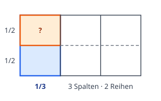

Brüche und Dezimalbrüche multiplizieren und dividieren
Mit einem KI-Tutor lernen
Ein KI-Tutor erklärt dir diese Seite und hilft dir bei den Aufgaben. Wähl deinen Assistenten:
Mit Claude öffnen Mit ChatGPT öffnen Mit Mistral Vibe öffnen
Du nutzt dein eigenes Konto beim Anbieter. Der Assistent ist kein Angebot von lernapps.net: lernapps liefert nur Inhalte und Aufgaben. Die Wahl gilt für alle Seiten, nur auf diesem Gerät.
Ziel: Ich kann Brüche und Dezimalbrüche multiplizieren und dividieren. Auf der vorigen Seite hast du addiert und subtrahiert – jetzt nimmst du mal und teilst. Einen Hauptnenner brauchst du dafür nicht.
Probier zuerst
Aufgabe
Lösung
1/5
Das wäre 1/(2 + 3). Nenner werden nicht addiert.
2/3
Das ist das Doppelte des Drittels, nicht die Hälfte.
1/6 richtige Antwort
Halbierst du jedes Drittel, hat das Blech 6 gleiche Stücke.
1/2
Das wäre die Hälfte des ganzen Blechs.
Die Hälfte von einem Drittel ist ein Sechstel.
„Von“ heißt mal
Halbiere das übrige Drittel durch eine waagerechte Linie. Sie teilt das ganze Blech in 3 Spalten und 2 Reihen, also in 3 · 2 = 6 gleiche Felder. Das orange Feld ist eines davon. „Die Hälfte von“ heißt „mal “: Zähler mal Zähler zählt die orangen Felder, Nenner mal Nenner alle Felder.

Das orange Feld ist die Hälfte des blauen Drittels. Zähle, wie viele solche Felder das ganze Blech hat.
Quelle: eigene Zeichnung. Lizenz: CC-BY-4.0.Teilen fragt: Wie oft passt der zweite Bruch in den ersten? In passt dreimal – genau so viel wie . Darum nimmst du mit dem Kehrwert des zweiten Bruchs mal. Beim Kehrwert tauschen Zähler und Nenner die Plätze.
Dezimalbrüche nimmst du erst ohne Komma mal. Das Ergebnis bekommt so viele Nachkommastellen wie beide Zahlen zusammen, denn Zehntel mal Zehntel sind Hundertstel. Beim Teilen verschiebst du das Komma in beiden Zahlen gleich weit nach rechts, bis du durch eine ganze Zahl teilst.
Ein Beispiel
Saft in Gläsern
Eine Flasche enthält 0,75 l Saft. Du gießt davon in Gläser. Als Dezimalbruch ist , das bricht nie ab. Also schreibst du 0,75 als Bruch: 0,75 ist , gekürzt .
Antwort – In den Gläsern ist 0,5 l Saft. Ein gekürzter Bruch wird ein abbrechender Dezimalbruch, wenn sein Nenner nur die Teiler 2 und 5 hat, zum Beispiel 4, 5, 8, 20 oder 25.
Den richtigen Bruch umdrehen
Merke
Beim Teilen drehst du nur den zweiten Bruch um – den, durch den du teilst. Beim Malnehmen von Dezimalbrüchen zählst du die Nachkommastellen: 0,3 · 0,2 = 0,06, nicht 0,6. Ein Überschlag hilft: 0,3 · 0,2 ist kleiner als 0,3 · 1 = 0,3.
Jetzt du
Aufgabe
Drei Beispielaufgaben, jede mit ihrer Lösung:
Aufgabe Nr. 1
Berechne und kürze das Ergebnis.
Tipp
Zähler mal Zähler, Nenner mal Nenner.
Lösung
- Zähler mal Zähler, Nenner mal Nenner: (4 · 1)/(5 · 2).
- = 4/10, gekürzt 2/5. Das Ergebnis ist 2/5.
Richtige Antwort: 2/5
Aufgabe Nr. 2
Berechne und kürze das Ergebnis.
Tipp
Zähler mal Zähler, Nenner mal Nenner.
Lösung
- Zähler mal Zähler, Nenner mal Nenner: (2 · 1)/(5 · 2).
- = 2/10, gekürzt 1/5. Das Ergebnis ist 1/5.
Richtige Antwort: 1/5
Aufgabe Nr. 3
Berechne und kürze das Ergebnis.
Tipp
Zähler mal Zähler, Nenner mal Nenner.
Lösung
- Zähler mal Zähler, Nenner mal Nenner: (2 · 1)/(5 · 2).
- = 2/10, gekürzt 1/5. Das Ergebnis ist 1/5.
Richtige Antwort: 1/5
Aufgabe
Drei Beispielaufgaben, jede mit ihrer Lösung:
Aufgabe Nr. 1
Berechne und kürze das Ergebnis.
Tipp
Welcher der beiden Brüche wird zum Kehrwert?
Lösung
- Teilen heißt mal den Kehrwert des zweiten Bruchs: 1/4 : 1/3 = 1/4 · 3/1.
- = (1 · 3)/(4 · 1) = 3/4. Das Ergebnis ist 3/4.
Richtige Antwort: 3/4
Aufgabe Nr. 2
Berechne und kürze das Ergebnis.
Tipp
Welcher der beiden Brüche wird zum Kehrwert?
Lösung
- Teilen heißt mal den Kehrwert des zweiten Bruchs: 4/5 : 2/5 = 4/5 · 5/2.
- = (4 · 5)/(5 · 2) = 20/10 = 2. Das Ergebnis ist 2.
Richtige Antwort: 2
Aufgabe Nr. 3
Berechne und kürze das Ergebnis.
Tipp
Welcher der beiden Brüche wird zum Kehrwert?
Lösung
- Teilen heißt mal den Kehrwert des zweiten Bruchs: 1/2 : 3/4 = 1/2 · 4/3.
- = (1 · 4)/(2 · 3) = 4/6, gekürzt 2/3. Das Ergebnis ist 2/3.
Richtige Antwort: 2/3
Aufgabe
Drei Beispielaufgaben, jede mit ihrer Lösung:
Aufgabe Nr. 1
Ein Beet ist 0,4 m lang und 0,9 m breit. Wie groß ist seine Fläche?
Tipp
Rechne erst ohne Komma. Dann zähle die Nachkommastellen.
Lösung
- Mit der Länge 0,4 m und der Breite 0,9 m: Rechne erst ohne Komma, dann bekommt das Ergebnis 1 + 1 = 2 Nachkommastellen.
- Das Beet hat eine Fläche von 0,36 m².
Richtige Antwort: 0,36 m²
Aufgabe Nr. 2
Ein Beet ist 0,7 m lang und 0,3 m breit. Wie groß ist seine Fläche?
Tipp
Rechne erst ohne Komma. Dann zähle die Nachkommastellen.
Lösung
- Mit der Länge 0,7 m und der Breite 0,3 m: Rechne erst ohne Komma, dann bekommt das Ergebnis 1 + 1 = 2 Nachkommastellen.
- Das Beet hat eine Fläche von 0,21 m².
Richtige Antwort: 0,21 m²
Aufgabe Nr. 3
Ein Beet ist 1,3 m lang und 0,8 m breit. Wie groß ist seine Fläche?
Tipp
Rechne erst ohne Komma. Dann zähle die Nachkommastellen.
Lösung
- Mit der Länge 1,3 m und der Breite 0,8 m: Rechne erst ohne Komma, dann bekommt das Ergebnis 1 + 1 = 2 Nachkommastellen.
- Das Beet hat eine Fläche von 1,04 m².
Richtige Antwort: 1,04 m²
Aufgabe
Drei Beispielaufgaben, jede mit ihrer Lösung:
Aufgabe Nr. 1
Eine Leiste ist 7,8 m lang. Du sägst sie in gleiche Stücke von 0,3 m. Wie viele Stücke bekommst du?
Tipp
Verschiebe das Komma in beiden Zahlen um eine Stelle nach rechts.
Lösung
- Länge 7,8 m geteilt durch die Stücklänge 0,3 m: Komma in beiden Zahlen eine Stelle nach rechts.
- Du bekommst 26 Stücke.
Richtige Antwort: 26
Aufgabe Nr. 2
Eine Leiste ist 5,6 m lang. Du sägst sie in gleiche Stücke von 0,8 m. Wie viele Stücke bekommst du?
Tipp
Verschiebe das Komma in beiden Zahlen um eine Stelle nach rechts.
Lösung
- Länge 5,6 m geteilt durch die Stücklänge 0,8 m: Komma in beiden Zahlen eine Stelle nach rechts.
- Du bekommst 7 Stücke.
Richtige Antwort: 7
Aufgabe Nr. 3
Eine Leiste ist 3,9 m lang. Du sägst sie in gleiche Stücke von 0,3 m. Wie viele Stücke bekommst du?
Tipp
Verschiebe das Komma in beiden Zahlen um eine Stelle nach rechts.
Lösung
- Länge 3,9 m geteilt durch die Stücklänge 0,3 m: Komma in beiden Zahlen eine Stelle nach rechts.
- Du bekommst 13 Stücke.
Richtige Antwort: 13
Aufgabe
Lösung
Richtige Antwort: 1/4 – 0,25; 3/5 – 0,6; 1/8 – 0,125; 7/20 – 0,35
Erweitere auf 10, 100 oder 1000: 1/4 = 25/100, 3/5 = 6/10, 1/8 = 125/1000, 7/20 = 35/100.
Aufgabe
Lösung
Richtige Antwort: 0,75 m
3/8 von 2,4 m sind 2,4 : 8 · 3 = 0,9 m. Rest: 2,4 m − 0,9 m = 1,5 m. Die Hälfte davon ist 0,75 m.
Als Nächstes kommt alles zusammen – in langen Rechnungen mit Klammern und Punkt vor Strich.
Fehler gefunden oder eine Idee für diese App?